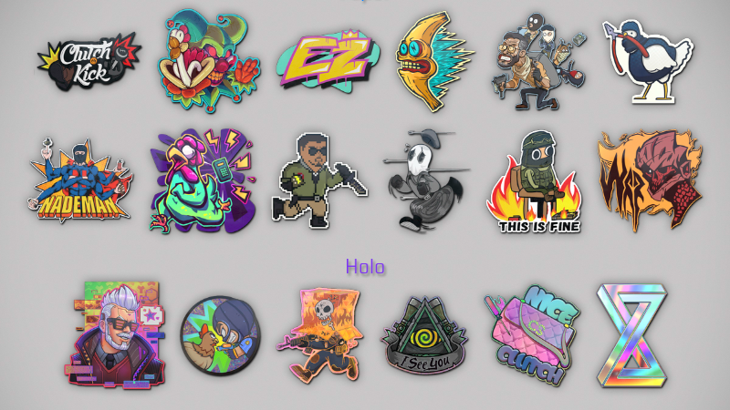

This website is those of you who are wanting to make their guns prettier or more fun in the new game CS2.
There are some question you might ask yourselves before we start:
Counter-Strike 2 is a free-to-play tactical first-person shooter game developed and published in 2023 by Valve.
It is the fifth entry in the Counter-Strike series, developed as an updated version of the previous entry,
Counter-Strike: Global Offensive (2012).
Getting into the exciting world of CS2 is easy and completely free.
You can follow this link to download and install the game.
What do we use for crafting:
Gun skins
Stickers
Charms
GUN SKINS
Skins, also referred to as finishes, introduced in the Arms Deal update.
They are weapons with different textures that can be equipped in-game.
They are entirely cosmetic, holding no gameplay function.
To acquire a skin, one must either:
Earn them through random drops by playing in online community and official servers.
From opening containers, such as weapon cases or souvenir packages.
Trade 10 skins of the same rarity for one of a higher rarity with a Trade Up Contract.
Stickers were introduced in Counter-Strike: Global Offensive with the February 5,
2014 update and are purely cosmetic addition to customize a player's weapon.
A sticker from the player's inventory can be applied only once to any gun or gun skin owned,
after which it will be removed from the player's inventory and only exist on the weapon it was placed onto.
Trading the weapon skin will carry the applied stickers with them, though stickers applied to vanilla skins (stock weapon skins)
cannot be traded since vanilla weapon skins cannot be traded.
A maximum of 5 stickers can be applied to a weapon.
Finding them pre-applied on skins on the Steam Market

CHARMS
On October 2nd, 2024, CS2 introduced a new Armory Update that brought two brand-new charm collections:
the Missing Link Charm Collection and the Small Arms Charm Collection. These charms are an exciting addition to the game,
providing players with stylish, attachable collectibles that can be displayed on their weapons.